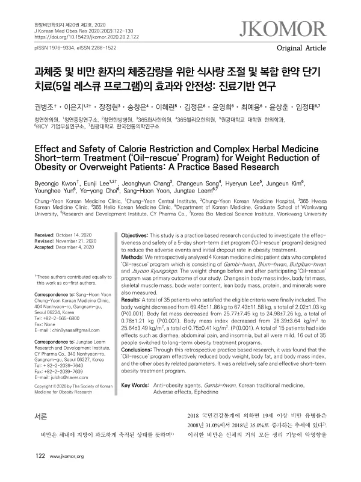

Effect and Safety of Calorie Restriction and Complex Herbal Medicine Short-term Treatment (‘Oil-rescue’ Program) for Weight Reduction of Obesity or Overweight Patients: A Practice Based Research
Kwon B, Lee E, Chang J, Song C, Lee H, Kim J, Yun Y, Choi Yy, Yoon SH, Leem J
Journal of Korean Medicine for Obesity Research 20(2):122-130

첫 장 · 오픈액세스First page · open access
논문 소개Summary
비만 한약치료에서 초기 탈락은 흔한 일입니다. 마황이 든 처방을 쓰면 부작용과 공복감, 변비가 따라오고 그 때문에 시작하자마자 그만두는 환자가 적지 않습니다. 그런데 비만 치료의 성공에는 초기 감량의 성공이 중요합니다. 5일 레스큐 프로그램은 그 초반의 고비를 넘기려고 만든 복합 한약 프로그램입니다. 감비환으로 감량하고 비움환으로 변비를 관리하며 붓기반환으로 수분 배출을 돕고 자윤경옥고로 마황이 일으키는 공복감을 달래는 구성입니다.
한의원 네 곳에서 이 프로그램을 마친 환자 35명의 진료기록을 후향적으로 검토했습니다. 참여자의 체중은 55.1킬로그램에서 109.5킬로그램 사이, 평균 69.45킬로그램이었고 체질량지수는 평균 26.39였습니다.
체중은 69.45킬로그램에서 67.43킬로그램으로 2.02킬로그램 줄었고 통계적으로 유의했습니다. 체질량지수는 26.39에서 25.64로, 체지방량은 25.77킬로그램에서 24.98킬로그램으로 줄었습니다. 하위군으로 나누면 체질량지수 25 이상인 비만 그룹의 감량폭이 더 컸습니다. 장기 비만치료 프로그램으로 넘어간 사람은 35명 중 16명, 46%였습니다.
저자들이 스스로 짚은 대목이 중요합니다. 평균 2.02킬로그램의 감량 가운데 0.91킬로그램이 체내 수분이었습니다. 닷새 만에 줄어든 무게의 절반 가까이가 물이라는 뜻입니다. 저자들은 임상에서 수분과 골격근의 감소가 함께 일어난다는 것을 환자에게 알려야 한다고 적었습니다.
부작용은 15명에게 설사와 복통, 불면 등이 있었으나 모두 경미했고 치료를 멈춘 뒤 사라졌습니다. 대조군이 없는 후향 연구이므로 생활관리만 했을 때와 견줄 수 없어 프로그램 자체의 효과를 가려낼 수 없고, 장기 추적도 불가능했습니다. 이 프로그램의 값은 감량폭 자체보다 부작용을 관리하며 장기치료로 이어지게 한 데 있다고 저자들은 판단했습니다.
Dropping out early is common in herbal treatment for obesity. Prescriptions containing ephedra bring adverse effects, hunger and constipation, and not a few patients stop almost as soon as they start — yet early success in losing weight is known to matter for success overall. The five-day 'Oil-rescue' programme was built to get patients over that opening hurdle: Gambi-hwan for weight reduction, Bium-hwan to manage constipation, Butgiban-hwan to help clear water, and Jayoon Kyungokgo to ease the hunger ephedra causes.
Records of 35 patients who completed the programme at four Korean medicine clinics were reviewed retrospectively. Their weights ranged from 55.1 to 109.5 kg, a mean of 69.45 kg, with a mean body mass index of 26.39.
Body weight fell from 69.45 to 67.43 kg, a reduction of 2.02 kg, statistically significant. Body mass index fell from 26.39 to 25.64 and body fat mass from 25.77 to 24.98 kg. In subgroup analysis, the reduction was larger in those with a body mass index of 25 or above. Sixteen of the 35 — 46% — went on to a long-term obesity treatment programme.
What the authors point out themselves matters most. Of the mean 2.02 kg lost, 0.91 kg was body water: close to half the weight shed in five days was water. Clinicians, they write, should tell patients that water and skeletal muscle are lost alongside fat.
Fifteen patients had adverse effects — diarrhoea, abdominal pain, insomnia — all mild, and all resolving after treatment stopped. Being retrospective and without a control group, the study cannot separate the programme's own effect from what lifestyle management alone would achieve, and no long-term follow-up was possible. The authors judge the programme's value to lie less in the size of the weight loss than in managing adverse effects so that patients continue into longer treatment.
인용Cite
Kwon B, Lee E, Chang J, Song C, Lee H, Kim J, Yun Y, Choi Yy, Yoon SH, Leem J. Effect and Safety of Calorie Restriction and Complex Herbal Medicine Short-term Treatment (‘Oil-rescue’ Program) for Weight Reduction of Obesity or Overweight Patients: A Practice Based Research. Journal of Korean Medicine for Obesity Research. 2020;20(2):122-130. doi:10.15429/jkomor.2020.20.2.122